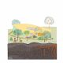
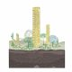
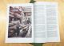
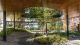
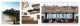
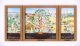

This is part of a three piece thinking series, please also see Treelogy, Part I: Learning from woodlands and Treelogy Part II: The tree and timber
Results [0]
What are you looking for?
MNDHRI

 Close
Close
Close
Thinking 29 November, 2021 | 5 min read
Treelogy, Part III: The Urban Forest

Treelogy, Part III: The Urban Forest – vignette by dRMM
Among the buildings, roads and railways, nature is thriving.
Paul Woods
London is a Forest
London is a Forest
The tree in the city
People are closely entwined with trees, both in terms of health and wellbeing, as well as the cellulose-based materials trees can produce. Insights into the benefits for human health of exposure to trees can, and should, drive the way we build our towns and cities. For too long, humankind has established itself as being separate from nature, exploiting the natural world to accommodate our own gains. Extinctions of species, leaching, eutrophication and diseases in our natural landscapes are not incorporated into our measure of the value of things we extract from nature – meaning that, all too often, we do not fully recognise the true cost humanity’s impact on natural systems has.
The Dasgupta Review released in February 2021 was a landmark report addressing this issue, stating that humankind is ‘part of Nature, not separate from it’. The report presented a developing economic case for how the continued exploitation of nature and degradation of natural assets with no economic ramifications would spell out a road to disaster. The Dasgupta Review instead argues that nature in and of itself is an asset upon which humanity relies fundamentally – a viewpoint that, so far, has remained outside the mainstream in economics.
Humans need access to nature to thrive. Increasingly the world’s populations are moving to live in cities and urban places, with over 50% of people already living in cities worldwide – the UN predicts this will rise to 68% by 2050. With this shift in societal culture away from the rural comes potential for imbalance in terms of humankind’s relationship to, and with, nature. In 2019, London was labelled as the first National Park City, on account of its large green spaces, including 8.4 million trees of over 1500 different species. There are plans to further increase green space to over 50% in London, an idea dRMM explored in its drawing for the Seoul Biennale in 2019 and developed further in our ACAN team members’ response to the government’s English Tree Strategy consultation.
We know that access to green space and trees is unequal in the UK, with richer areas of cities more likely to be tree-lined, peppered with parks with green space for residents to enjoy. According to Friends of the Earth, one in five people in England do not have a garden, public park or open fields close to where they live. As we now better understand the value of trees and green spaces for health and wellbeing post-COVID, we hope that this inequality can be challenged and addressed in the design of new places and in enhancements to existing places.

‘London is…a city to live in’, 2019 Seoul Biennale entry - speculative drawing by dRMM
Trees in urban areas are hugely important to people living in cities and towns for health and wellbeing, as well as for ensuring climate resilience.
Trees offer a multitude of environmental benefits to communities – giving shade in summer, reducing air temperatures by around 3⁰C, whilst the fact that they lose their leaves in winter means there’s still solar gain when needed. Collectively, trees sequester around 5.5kg carbon per year and act as important urban drainage systems, whether as part of a wider SuDS strategy or not, reducing air pollution and supporting biodiversity.
As designers, we have responsibility to maximise these benefits in our approach to the design of, and interventions in, the built environment. dRMM looks to retain mature trees wherever possible in our projects, for example designing our housing scheme Trafalgar Place around significant mature London Plane trees existing on site. These not only add character to the development, but also offer shading to the facades of the scheme’s buildings and provide a sense of connection to lifespan the site has existed through.
Close to dRMM’s London studio, in and around Bermondsey, is home to one of the city’s best urban street tree legacy stories. Ada Salter (1866-1942) was Bermondsey’s first female mayor and the ‘driving force behind the transformation of Bermondsey from industrial slum to green oasis’, as described by Paul Woods, the author of London is a Forest. Salter’s development of the Beautification Committee during her term as mayor of Bermondsey saw the planting of thousands of street trees in area, with many still visible today;
‘This innocuous sounding task force was driven by the compulsion that improving the environment was part and parcel of improving people’s lives, and that by raising aesthetic appreciation of their neighbourhoods, a sense of personal wellbeing and civic pride would be engendered. Salter’s ambition with the Beautification Committee was to turn Bermondsey into nothing less than a garden city.’
We as a studio team explored the legacy of Salter’s tree planting, in particular the Tree of Heaven that lines so many of our local streets, with Paul Woods on a walking tour on Global Climate Strike day in 2020. We were left with the feeling that we all should all be a bit more like Ada Salter and advocate for increased canopy cover in towns and cities. As architects, we have more agency than most to influence and better the unequal distribution of green spaces and trees in our built environment. And as citizens, we can and should take on the role of tree wardens and volunteer to water newly planted trees in their years of establishing, to ensure that trees we do plant in our cities last long into the future, as Ada Salter’s trees have.
This innocuous sounding task force was driven by the compulsion that improving the environment was part and parcel of improving people’s lives, and that by raising aesthetic appreciation of their neighbourhoods, a sense of personal wellbeing and civic pride would be engendered. Salter’s ambition with the Beautification Committee was to turn Bermondsey into nothing less than a garden city.
As a team, dRMM explored the legacy of Salter’s tree planting, in particular the Tree of Heaven that lines so many of our local streets, with Paul Woods on a walking tour in Bermondsey as a concluding activity to the Global Climate Strike day in 2019. The team was left encouraged by the potential and possibility of visions like Ada Salter’s, translating into a prerogative to advocate for increased tree canopy cover in towns and cities. As architects, we have more agency than most to influence and better the unequal distribution of green spaces and trees in the built environment. As citizens, we can and should take on the role of tree wardens and volunteer to water newly planted trees in their years of establishing, ensuring that trees we do plant in our cities last long into the future, as Ada Salter’s trees have.



Spaces for learning, living and working in the urban forest – vignette by dRMM


Cities as working forests
Imagine if we were to treat the canopy cover in our cities and urban places as a working forest, what would that translate to?
‘The urban forest comprises all the trees in the urban realm – in public and private spaces, along linear routes and waterways, and in amenity areas. It is part of green infrastructure and the wider urban ecosystem’
Introducing England’s Urban Forests
Already, to some extent, this is happening, with ‘urban forests’ becoming an emerging area of discourse and training in the UK, combining the skills of arboricultural management with more typical forestry practices. But what we are suggesting takes this idea one step further than recognising our urban places as urban forests; we propose that their management regime might be developed in such a way as to create symbiotic wood working practices.
Sebastian Cox is a designer and maker who is finding ways to utilise trees that are felled from private gardens and urban landscapes to produce furniture and extend the life of those trees, continuing to sequester their carbon for another lifetime. Intervening at the point of felling means extending the life of the carbon store, rather than wood being relegated to woodchipping for horticultural purposes, or being sold as logs for private residential fireplaces to burn and emit greenhouse gases and particulates into the atmosphere.
Greentalk has been working to map trees as datapoints for councils such as Hounslow. Imagine if this moved one step further and became a management manual for maintenance of trees that then identified opportunities where trees are being pollarded or, perhaps due to disease, felled, converting these opportunities into furniture production or even buildings. Imagine if prior to pollarding, coppicing or felling, those trees were 3D scanned and logged into a BIM warehouse where the full range of timbers available from standard management practices would be made available to makers who could begin anticipating them in BIM to optimise the usage of those trees.
This more careful appreciation of the life of our urban forests and potential as resource stores would incentivise paying closer attention to the next lives of trees in our communities and recognising their role as a fundamental building block of civilization. It would also encourage us to find ways to utilise a greater diversity of trees in making and connect more closely with timber manufacturing. If we were to regard our urban canopy cover not only as an asset for nature and humans to enjoy, but also a potential resource to utilise in making functional objects and buildings, imagine the added value and purpose it could bring to tree planting in urban places.

"Modern life from wilder land", manifesto by Sebastian Cox - photo by dRMM
The built environment as an urban forest
It is possible that if we move towards an increasingly timber-led construction industry that, in a sense, our buildings will act as a form of urban forest, with timber towers and structures locking carbon into the built environment, and with a circularity akin to that found inherently in nature. As practitioners, we hope that timber-led construction will emerge in conjunction with a greater care and nurturing of existing buildings, as the greenest building is often the building that already exists.
Light-touch adaptations and extensions to existing structures are very possible in timber, often able to be implemented without adding to structural foundations, given how over-engineered many buildings are in the UK. This approach to adapting the built environment in a more symbiotic, circumstance-based approach closely resembles the way trees sometimes foster other trees through inosculation, ultimately depending on one another for wellbeing.
In the UK’s existing built environment, medieval tithe barns and timber spire structures stand as reminders of a time when a significant portion of the working population toiled within forestry and woodwork, allowing communities to thrive around the use of a locally sourced renewable material. Builders knew to keep rough-hewn structures elevated from damp and away from falling rain, allowing buildings like Greensted Church to retain timbers from as far back as 1053, forming integral parts of communities for centuries to come. Our team at dRMM feels that much of the knowledge and appreciation of working with timber and designing for its longevity has been lost, and we hope that by looking back to historical timber construction practices we can ensure any new timber buildings or assets last as long as the medieval timber systems.
We are now able to discern the benefits to wellbeing of living and working in timber buildings as compared with other built environments. The Maggie’s Centre in Oldham, designed by dRMM in 2017, employed a timber structure and finishes for this reason, recognising from the outset that a calming space made from natural renewable materials could add wellbeing benefits to the care being offered. Focused institutions such as InnoRenew have tested various scenarios to determine what some of the ‘biophilic’ benefits of timber are within buildings, setting up comparative tests against other materials and comparing species in different lighting conditions. As a studio, dRMM believes such benefits should be examined and understood, but above all, experienced by everyone.


Maggie's Oldham (2019) - photo by Tony Barwell
Across all building types, design for disassembly will become increasingly important in evidencing buildings’ ability to contribute to a more circular economy.
In exposing the structure for periodic access and maintenance, timber buildings can live indefinitely as aged components are replaced, or even entire structures deconstructed, moved and rebuilt without the destruction and re-design of their building.
What’s more, if the species and treatments are well suited, the life of timber buildings might be extended as aged timbers find new uses. Rather than looking to virgin timber, dRMM were able to make use of boards in Hastings Pier that survived a fire in 2010 to build new and to refurbish, extending the life of the material as cladding and furniture. Not only does this type of reuse take strain off supply chains of virgin material, but the material’s former useful life remains evident in the building’s story, as the charred ends of the pier’s floorboards remind visitors of the site’s past.


Hastings Pier after the fire - photo by Alex de Rijke / Hastings Pier material palette - photo by Ståle Eriksen / Hastings Pier (2016) - photo by James Robertshaw
To live with timber in buildings is to live with trees in their second life.
Yet we know of the benefits to human health in observing and engaging in their first. Forest Research has established an Urban Forest Group, translating findings around the positive physiological benefits of woodland access and enjoyment to our cities, recognising that the ability to drive to woodlands, working or otherwise, is a privilege available to relatively few. Benefits of active involvement in forest management by non-experts are also clear, raising the question as to why these activities happen so far from where people are. Urban forests may be geared to produce the materials needed to decarbonise, whilst servicing the needs of the biosphere and improving human health.
Designers like Sebastian Cox have shifted the focus in the furniture industry through their own practice towards a ‘Modern Life from Wilder Land’ – the same thing should happen in construction. The aim must and is shifting from simply lessening our impact on the environment to actively seeking a quality and regenerative engagement.
Like all other creatures, human beings do not exist on the ‘other side’ of materiality, but swim in an ocean of materials. Once we acknowledge our immersion, what this ocean reveals is not the bland homogeneity of different shades of matter, but a flux in which materials of the most diverse kinds – through processes of admixture and distillation, of coagulation and dispersal, and of evaporation and precipitation – undergo continual generation and transformation. The forms of things, far from having been imposed from without upon an inert substrate, arise and are borne along – as indeed we are too – within this current of materials.
Tim Ingold
Materials against materiality
Materials against materiality

Treeptych - dRMM original artwork exhibited in Royal Academy Summer Exhibition
Treelogy is three-part essay companion to dRMM’s Treeptych drawing, on display at the Royal Academy 2021 Summer Show. Treelogy zooms into the life of trees and timber over three parts – from their role in nature’s diverse ecosystem, to their sustainable use in construction, and finally their relationship with humanity’s communities and urban realm. The three essays have been authored by dRMM’s Sustainability & Regenerative Design Manager Kat Scott and Architectural Assistant Finbar Charleson, with editorial support from independent design writer Ann Dingli. Treeptych and Treelogy have been conceived and produced as part of dRMM’s ongoing climate action, specifically supporting our Architects Declare knowledge sharing commitment, as well as the studio’s longstanding timber research and application within the construction industry.